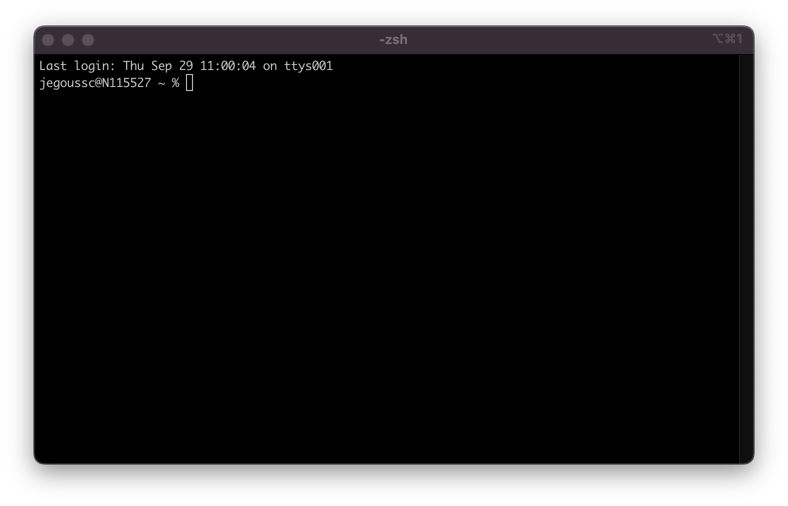
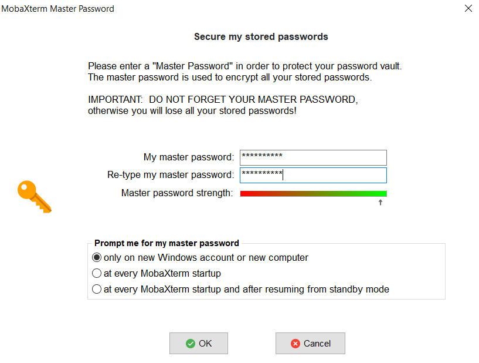
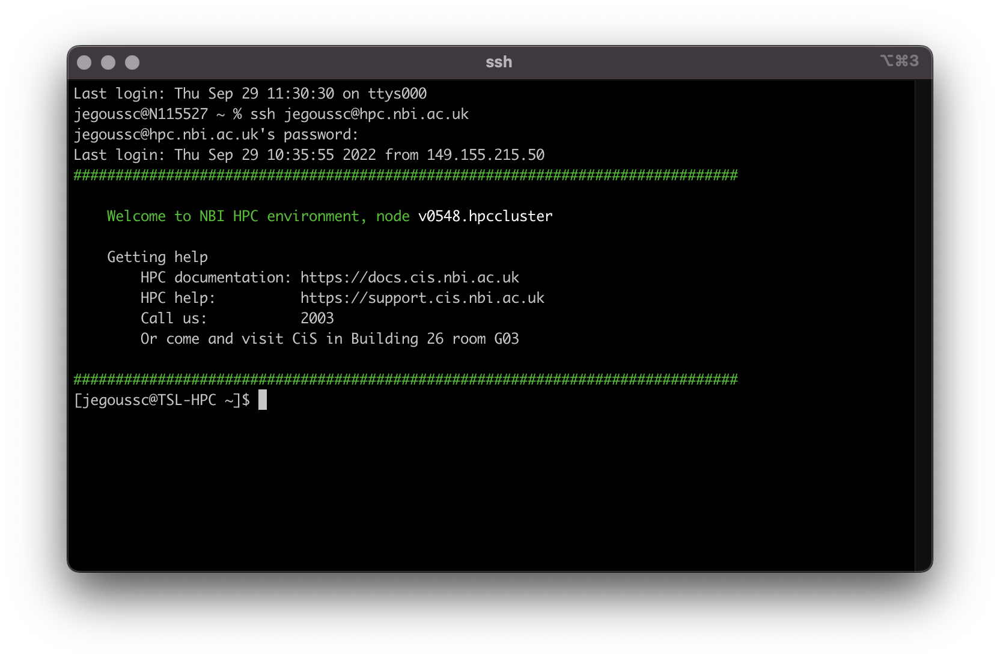

4 Redirection
4.1 Searching files
We discussed in a previous episode how to search within a file using less. We can also search within files without even opening them, using grep. grep is a command-line utility for searching plain-text files for lines matching a specific set of characters (sometimes called a string) or a particular pattern (which can be specified using something called regular expressions). We’re not going to work with regular expressions in this lesson, and are instead going to specify the strings we are searching for. Let’s give it a try!
The four nucleotides that appear in DNA are abbreviated A, C, T and G. Unknown nucleotides are represented with the letter N. An N appearing in a sequencing file represents a position where the sequencing machine was not able to confidently determine the nucleotide in that position. You can think of an N as being aNy nucleotide at that position in the DNA sequence.
We’ll search for strings inside of our fastq files. Let’s first make sure we are in the correct directory:
$ cd ~/shell_data/untrimmed_fastqSuppose we want to see how many reads in our file have really bad segments containing 10 consecutive unknown nucleotides (Ns).
In this lesson, we’re going to be manually searching for strings of Ns within our sequence results to illustrate some principles of file searching. It can be really useful to do this type of searching to get a feel for the quality of your sequencing results, however, in your research you will most likely use a bioinformatics tool that has a built-in program for filtering out low-quality reads.
Let’s search for the string NNNNNNNNNN in the SRR098026 file:
$ grep NNNNNNNNNN SRR098026.fastqThis command returns a lot of output to the terminal. Every single line in the SRR098026 file that contains at least 10 consecutive Ns is printed to the terminal, regardless of how long or short the file is. We may be interested not only in the actual sequence which contains this string, but in the name (or identifier) of that sequence. We discussed in a previous lesson that the identifier line immediately precedes the nucleotide sequence for each read in a FASTQ file. We may also want to inspect the quality scores associated with each of these reads. To get all of this information, we will return the line immediately before each match and the two lines immediately after each match.
We can use the -B argument for grep to return a specific number of lines before each match. The -A argument returns a specific number of lines after each matching line. Here we want the line before and the two lines after each matching line, so we add -B1 -A2 to our grep command:
$ grep -B1 -A2 NNNNNNNNNN SRR098026.fastq4.2 Redirecting output
grep allowed us to identify sequences in our FASTQ files that match a particular pattern. All of these sequences were printed to our terminal screen, but in order to work with these sequences and perform other operations on them, we will need to capture that output in some way.
We can do this with something called redirection
. The idea is that we are taking what would ordinarily be printed to the terminal screen and redirecting it to another location. In our case, we want to print this information to a file so that we can look at it later and use other commands to analyze this data.
The command for redirecting output to a file is >.
Let’s try out this command and copy all the records (including all four lines of each record) in our FASTQ files that contain NNNNNNNNNN
to another file called bad_reads.txt.
$ grep -B1 -A2 NNNNNNNNNN SRR098026.fastq > bad_reads.txtYou might be confused about why we’re naming our output file with a .txt extension. After all, it will be holding FASTQ formatted data that we’re extracting from our FASTQ files. Won’t it also be a FASTQ file? The answer is, yes - it will be a FASTQ file and it would make sense to name it with a .fastq extension. However, using a .fastq extension will lead us to problems when we move to using wildcards later in this episode. We’ll point out where this becomes important. For now, it’s good that you’re thinking about file extensions!
The prompt should sit there a little bit, and then it should look like nothing happened. But type ls. You should see a new file called bad_reads.txt.
We can check the number of lines in our new file using a command called wc. wc stands for word count. This command counts the number of words, lines, and characters in a file. The FASTQ file may change over time, so given the potential for updates, make sure your file matches your instructor’s output.
As of Sept. 2020, wc gives the following output:
$ wc bad_reads.txt
802 1338 24012 bad_reads.txtThis will tell us the number of lines, words and characters in the file. If we want only the number of lines, we can use the -l flag for lines.
$ wc -l bad_reads.txt
802 bad_reads.txtWe might want to search multiple FASTQ files for sequences that match our search pattern. However, we need to be careful, because each time we use the > command to redirect output to a file, the new output will replace the output that was already present in the file. This is called overwriting
and, just like you don’t want to overwrite your video recording of your kid’s first birthday party, you also want to avoid overwriting your data files.
$ grep -B1 -A2 NNNNNNNNNN SRR098026.fastq > bad_reads.txt
$ wc -l bad_reads.txt$ grep -B1 -A2 NNNNNNNNNN SRR097977.fastq > bad_reads.txt
$ wc -l bad_reads.txt
0 bad_reads.txtHere, the output of our second call to wc shows that we no longer have any lines in our bad_reads.txt file. This is because the second file we searched (SRR097977.fastq) does not contain any lines that match our search sequence. So our file was overwritten and is now empty.
We can avoid overwriting our files by using the command >>. >> is known as the append redirect
and will append new output to the end of a file, rather than overwriting it.
$ grep -B1 -A2 NNNNNNNNNN SRR098026.fastq > bad_reads.txt
$ wc -l bad_reads.txt
802 bad_reads.txt$ grep -B1 -A2 NNNNNNNNNN SRR097977.fastq >> bad_reads.txt
$ wc -l bad_reads.txt
802 bad_reads.txtThe output of our second call to wc shows that we have not overwritten our original data.
We can also do this with a single line of code by using a wildcard:
$ grep -B1 -A2 NNNNNNNNNN *.fastq > bad_reads.txt
$ wc -l bad_reads.txt
802 bad_reads.txtThis is where we would have trouble if we were naming our output file with a .fastq extension. If we already had a file called bad_reads.fastq (from our previous grep practice) and then ran the command above using a .fastq extension instead of a .txt extension, grep would give us a warning.
$ grep -B1 -A2 NNNNNNNNNN *.fastq > bad_reads.fastq
grep: input file ‘bad_reads.fastq’ is also the outputgrep is letting you know that the output file bad_reads.fastq is also included in your grep call because it matches the *.fastq pattern. Be careful with this as it can lead to some unintended results.
4.2.1 Pipes
Since we might have multiple different criteria we want to search for, creating a new output file each time has the potential to clutter up our workspace. We also thus far haven’t been interested in the actual contents of those files, only in the number of reads that we’ve found. We created the files to store the reads and then counted the lines in the file to see how many reads matched our criteria. There’s a way to do this, however, that doesn’t require us to create these intermediate files - the pipe command (|).
This is probably not a key on your keyboard you use very much, so let’s all take a minute to find that key. For the standard QWERTY keyboard layout, the | character can be found using the key combination
Shift+\
What | does is take the output that is scrolling by on the terminal and uses that output as input to another command. When our output was scrolling by, we might have wished we could slow it down and look at it, like we can with less. Well it turns out that we can! We can redirect our output from our grep call through the less command.
$ grep -B1 -A2 NNNNNNNNNN SRR098026.fastq | lessWe can now see the output from our grep call within the less interface. We can use the up and down arrows to scroll through the output and use q to exit less.
If we don’t want to create a file before counting lines of output from our grep search, we could directly pipe the output of the grep search to the command wc -l. This can be helpful for investigating your output if you are not sure you would like to save it to a file.
$ grep -B1 -A2 NNNNNNNNNN SRR098026.fastq | wc -l Because we asked grep for all four lines of each FASTQ record, we need to divide the output by four to get the number of sequences that match our search pattern. Since 802 / 4 = 200.5 and we are expecting an integer number of records, there is something added or missing in bad_reads.txt. If we explore bad_reads.txt using less, we might be able to notice what is causing the uneven number of lines. Luckily, this issue happens by the end of the file so we can also spot it with tail.
$ grep -B1 -A2 NNNNNNNNNN SRR098026.fastq > bad_reads.txt
$ tail bad_reads.txt
@SRR098026.133 HWUSI-EAS1599_1:2:1:0:1978 length=35
ANNNNNNNNNTTCAGCGACTNNNNNNNNNNGTNGN
+SRR098026.133 HWUSI-EAS1599_1:2:1:0:1978 length=35
#!!!!!!!!!##########!!!!!!!!!!##!#!
--
--
@SRR098026.177 HWUSI-EAS1599_1:2:1:1:2025 length=35
CNNNNNNNNNNNNNNNNNNNNNNNNNNNNNNNNNN
+SRR098026.177 HWUSI-EAS1599_1:2:1:1:2025 length=35
#!!!!!!!!!!!!!!!!!!!!!!!!!!!!!!!!!!The fifth and six lines in the output display –
which is the default action for grep to separate groups of lines matching the pattern, and indicate groups of lines which did not match the pattern so are not displayed. To fix this issue, we can redirect the output of grep to a second instance of grep as follows.
$ grep -B1 -A2 NNNNNNNNNN SRR098026.fastq | grep -v '^--' > bad_reads.fastq
$ tail bad_reads.fastq
+SRR098026.132 HWUSI-EAS1599_1:2:1:0:320 length=35
#!!!!!!!!!##########!!!!!!!!!!##!#!
@SRR098026.133 HWUSI-EAS1599_1:2:1:0:1978 length=35
ANNNNNNNNNTTCAGCGACTNNNNNNNNNNGTNGN
+SRR098026.133 HWUSI-EAS1599_1:2:1:0:1978 length=35
#!!!!!!!!!##########!!!!!!!!!!##!#!
@SRR098026.177 HWUSI-EAS1599_1:2:1:1:2025 length=35
CNNNNNNNNNNNNNNNNNNNNNNNNNNNNNNNNNN
+SRR098026.177 HWUSI-EAS1599_1:2:1:1:2025 length=35
#!!!!!!!!!!!!!!!!!!!!!!!!!!!!!!!!!!The -v option in the second grep search stands for --invert-match meaning grep will now only display the lines which do not match the searched pattern, in this case '^--'. The caret (^) is an anchoring character matching the beginning of the line, and the pattern has to be enclose by single quotes so grep does not interpret the pattern as an extended option (starting with –).
Use man grep to read more about other options to customize the output of grep including extended options, anchoring characters, and much more.
Redirecting output is often not intuitive, and can take some time to get used to. Once you’re comfortable with redirection, however, you’ll be able to combine any number of commands to do all sorts of exciting things with your data!
None of the command line programs we’ve been learning do anything all that impressive on their own, but when you start chaining them together, you can do some really powerful things very efficiently.
5 File manipulation and more practices with pipes
To practice a bit more with the tools we’ve added to our tool kit so far and learn a few extra ones you can follow this extra lesson which uses the SRA metadata file.
5.1 Writing for loops
Loops are key to productivity improvements through automation as they allow us to execute commands repeatedly. Similar to wildcards and tab completion, using loops also reduces the amount of typing (and typing mistakes). Loops are helpful when performing operations on groups of sequencing files, such as unzipping or trimming multiple files. We will use loops for these purposes in subsequent analyses, but will cover the basics of them for now.
When the shell sees the keyword for, it knows to repeat a command (or group of commands) once for each item in a list. Each time the loop runs (called an iteration), an item in the list is assigned in sequence to the variable, and the commands inside the loop are executed, before moving on to the next item in the list. Inside the loop, we call for the variable’s value by putting $ in front of it. The $ tells the shell interpreter to treat the variable as a variable name and substitute its value in its place, rather than treat it as text or an external command. In shell programming, this is usually called expanding
the variable.
Sometimes, we want to expand a variable without any whitespace to its right. Suppose we have a variable named foo that contains the text abc, and would like to expand foo to create the text abcEFG.
$ foo=abc
$ echo foo is $foo
foo is abc
$ echo foo is $fooEFG # doesn't work
foo isThe interpreter is trying to expand a variable named fooEFG, which (probably) doesn’t exist. We can avoid this problem by enclosing the variable name in braces ({ and }, sometimes called squiggle braces
). bash treats the # character as a comment character. Any text on a line after a # is ignored by bash when evaluating the text as code.
$ foo=abc
$ echo foo is $foo
foo is abc
$ echo foo is ${foo}EFG # now it works!
foo is abcEFGLet’s write a for loop to show us the first two lines of the fastq files we downloaded earlier. You will notice the shell prompt changes from $ to > and back again as we were typing in our loop. The second prompt, >, is different to remind us that we haven’t finished typing a complete command yet. A semicolon, ;, can be used to separate two commands written on a single line.
$ cd ../untrimmed_fastq/$ for filename in *.fastq
> do
> head -n 2 ${filename}
> doneYou used copy-paste for the for loop spanning over four line! But in this case, you must type each line one by one. It is possible to write the for loop as a single line:
for filename in *.fastq; do head -n 2 ${filename}; doneThe for loop begins with the formula for <variable> in <group to iterate over>. In this case, the word filename is designated as the variable to be used over each iteration. In our case SRR097977.fastq and SRR098026.fastq will be substituted for filename because they fit the pattern of ending with .fastq in the directory we’ve specified. The next line of the for loop is do. The next line is the code that we want to execute. We are telling the loop to print the first two lines of each variable we iterate over. Finally, the word done ends the loop.
After executing the loop, you should see the first two lines of both fastq files printed to the terminal. Let’s create a loop that will save this information to a file.
$ for filename in *.fastq
> do
> head -n 2 ${filename} >> seq_info.txt
> doneWhen writing a loop, you will not be able to return to previous lines once you have pressed Enter. Remember that we can cancel the current command using Ctrl + C.
If you notice a mistake that is going to prevent your loop for executing correctly.
Note that we are using >> to append the text to our seq_info.txt file. If we used >, the seq_info.txt file would be rewritten every time the loop iterates, so it would only have text from the last variable used. Instead, >> adds to the end of the file.
5.2 Using Basename in for loops
Basename is a function in UNIX that is helpful for removing a uniform part of a name from a list of files. In this case, we will use basename to remove the .fastq extension from the files that we’ve been working with.
$ basename SRR097977.fastq .fastqWe see that this returns just the SRR accession, and no longer has the .fastq file extension on it.
SRR097977If we try the same thing but use .fasta as the file extension instead, nothing happens. This is because basename only works when it exactly matches a string in the file.
$ basename SRR097977.fastq .fasta
SRR097977.fastqBasename is really powerful when used in a for loop. It allows to access just the file prefix, which you can use to name things. Let’s try this.
Inside our for loop, we create a new name variable. We call the basename function inside the parenthesis, then give our variable name from the for loop, in this case ${filename}, and finally state that .fastq should be removed from the file name. It’s important to note that we’re not changing the actual files, we’re creating a new variable called name. The line > echo $name will print to the terminal the variable name each time the for loop runs. Because we are iterating over two files, we expect to see two lines of output.
$ for filename in *.fastq
> do
> name=$(basename ${filename} .fastq)
> echo ${name}
> doneOne way this is really useful is to move files. Let’s rename all of our .txt files using mv so that they have the years on them, which will document when we created them.
$ for filename in *.txt
> do
> name=$(basename ${filename} .txt)
> mv ${filename} ${name}_2022.txt
> doneRemove _2022 from all of the .txt files.
5.3 Summary
grepis a powerful search tool with many options for customization.>,>>, and|are different ways of redirecting output.command > fileredirects a command’s output to a file.command >> fileredirects a command’s output to a file without overwriting the existing contents of the file.command_1 | command_2redirects the output of the first command as input to the second command.forloops are used for iteration.basenamegets rid of repetitive parts of names.
6 Introducing the shell
6.1 What is a shell and why should I care?
A shell is a computer program that presents a command line interface which allows you to control your computer using commands entered with a keyboard instead of controlling graphical user interfaces (GUIs) with a mouse/keyboard/touchscreen combination.
There are many reasons to learn about the shell:
Many bioinformatics tools can only be used through a command line interface. Many more have features and parameter options which are not available in the GUI. BLAST is an example. Many of the advanced functions are only accessible to users who know how to use a shell.
The shell makes your work less boring. In bioinformatics you often need to repeat tasks with a large number of files. With the shell, you can automate those repetitive tasks and leave you free to do more exciting things.
The shell makes your work less error-prone. When humans do the same thing a hundred different times (or even ten times), they’re likely to make a mistake. Your computer can do the same thing a thousand times with no mistakes.
The shell makes your work more reproducible. When you carry out your work in the command-line (rather than a GUI), your computer keeps a record of every step that you’ve carried out, which you can use to re-do your work when you need to. It also gives you a way to communicate unambiguously what you’ve done, so that others can inspect or apply your process to new data.
Many bioinformatic tasks require large amounts of computing power and can’t realistically be run on your own machine. These tasks are best performed using remote computers or cloud computing, which can only be accessed through a shell.
In this lesson you will learn how to use the command line interface to move around in your file system.
6.2 How to access the shell
The Terminal is a window into which we will use to type commands in.
6.2.1 Windows
If you’re using Windows, you need to use a separate program to access the shell. You can use MobaXterm, a terminal for Windows, that is already installed on your machine.
- Click on the MobaXterm icon on your desktop.
- Select
Start local terminal


6.2.2 MacOS
On a Mac or Linux machine, you can access a shell through a program called Terminal
, which is already available on your computer.


6.3 How to access the remote server
To save time, we are going to be working on a remote server where all the necessary data and software available. When we say a remote sever
, we are talking about a computer that is not the one you are working on right now. You will access the remote server where everything is prepared for the lesson. We will learn the basics of the shell by manipulating some data files. Some of these files are very large , and would take time to download to your computer. We will also be using several bioinformatic packages in later lessons and installing all of the software would take up time even more time. A ready-to-go
sever let’s us focus on learning.

The remote server is a computer cluster used for high performance computing (HPC) for the Norwich BioScience Institutes (NBI). You can log into the remote server using the command ssh, your username and the address of the server hpc.nbi.ac.uk (make sure to replace [username] by your actual TSL username).
ssh [username]@hpc.nbi.ac.ukYou must then input your password.


MobaXterm will offer for you to save your password. It is up to you to do so.


After entering you password, you will be logged in the server and see the welcome message as seen in the screen capture below:


This welcome message provides a lot of information about the remote server that you’re logging into. We’re not going to use most of this information for our workshop, so you can clear your screen using the clear command.
Type the word clear into the terminal and press the Enter key.
This will scroll your screen down to give you a fresh screen and will make it easier to read. You haven’t lost any of the information on your screen. If you scroll up, you can see everything that has been output to your screen up until this point.
Hot-key combinations are shortcuts for performing common commands. The hot-key combination for clearing the console is Ctrl+L. Feel free to try it and see for yourself.
6.5 Summary
We now know how to move around our file system using the command line. This gives us an advantage over interacting with the file system through a GUI as it allows us to work on a remote server, carry out the same set of operations on a large number of files quickly, and opens up many opportunities for using bioinformatic software that is only available in command line versions.
In the next few episodes, we’ll be expanding on these skills and seeing how using the command line shell enables us to make our workflow more efficient and reproducible.
- The shell gives you the ability to work more efficiently by using keyboard commands rather than a GUI.
- Useful commands for navigating your file system include:
ls,pwd, andcd. - Most commands take options (flags) which begin with a
-. - Tab completion can reduce errors from mistyping and make work more efficient in the shell.